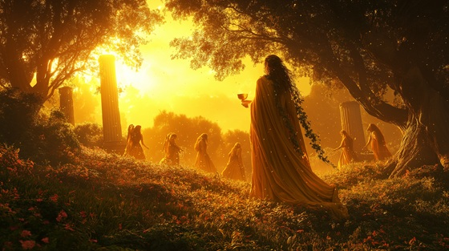

Dionysus was born from a tragedy: the death of his mother, Semele, when Zeus revealed his true divine form. To save the unborn child, Zeus sewed him into his own thigh until Dionysus was ready to be born again—a god of life beyond death, freedom beyond law, ecstasy beyond reason.
Dionysus embodies the uncontrollable, chaotic force that lies beneath civilization: revelry, rage, rebirth, and madness. He is both liberator and destroyer.
This song captures his wild divinity—the god who sings where kings fall, where vines choke the marble of empire.
The Vine and the Madness
Born of fire, crowned in ash
I wear the wound, I drink the lash
A child of death, a child of flame—
The vine, the madness bear my name
No temple stands, no king endures—
Where I have danced, the blood is pure
The vine and the madness, the roar and the feast
The god of the broken, the god of the beast
Tear down the crowns, shatter the years—
The wine will wash away your fears
The forests bow, the rivers sway
The stars ignite where Bacchants play
From mortal bones I build my halls—
A shrine of wild, unbroken calls
No chains can hold, no law can tame—
The wrath that sings in my domain
The vine and the madness, the roar and the feast
The god of the broken, the god of the beast
Tear down the crowns, shatter the years—
The wine will wash away your fears
They killed my mother, burnt her breath
But through her cries I conquered death
From Zeus's thigh I tore my fate—
A god of joy, a god of hate
“You fear the wild because you fear yourselves.”
The vine and the madness, the roar and the feast
The god of the broken, the god of the beast
Dance through the fire, drink from the cries—
The vine endures when empires die
Where cities fall and kings grow blind—
The vine and madness shall unwind